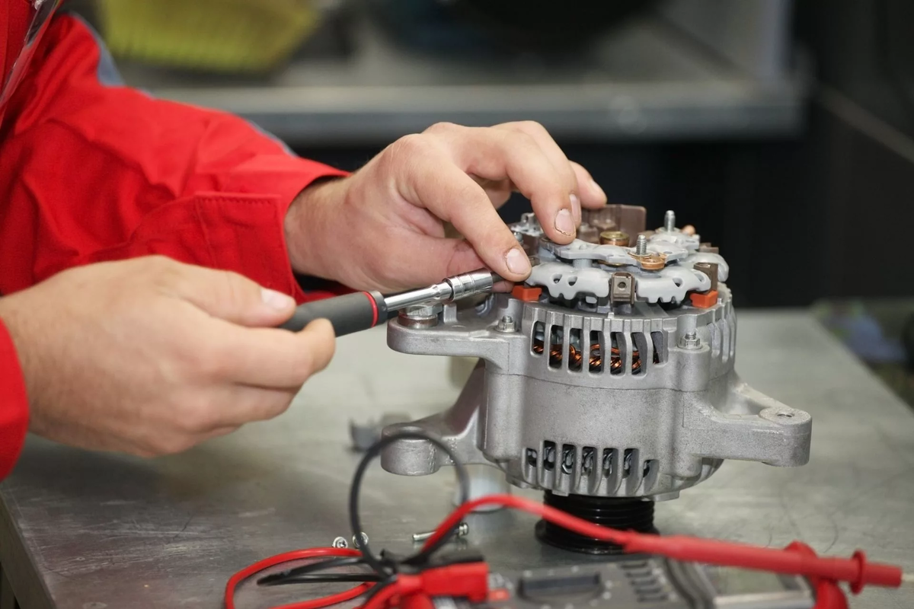
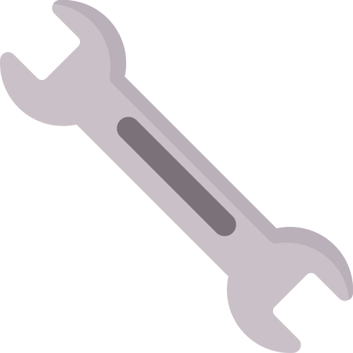
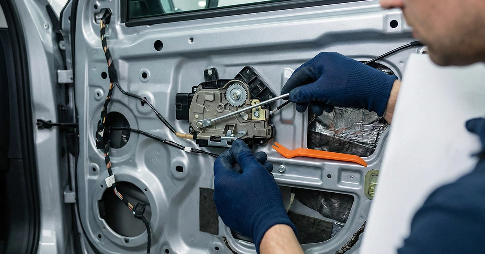
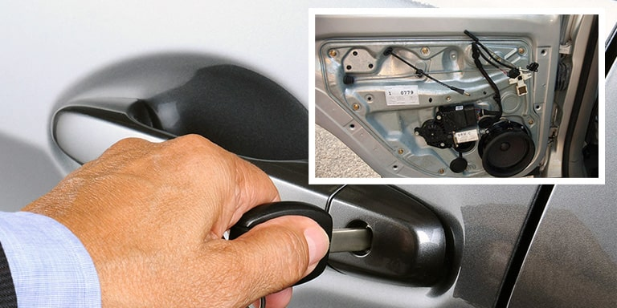
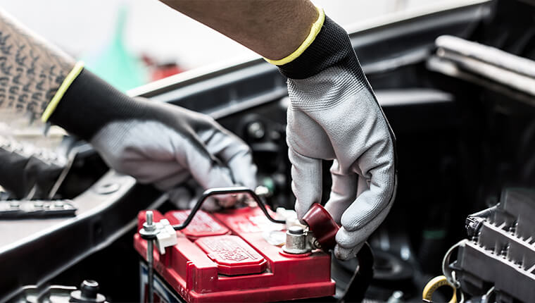
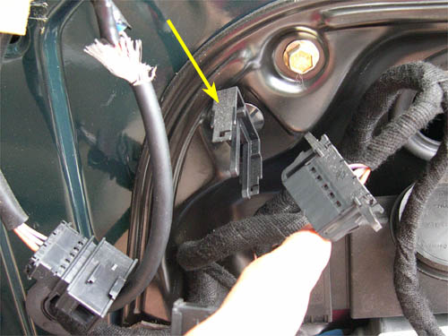
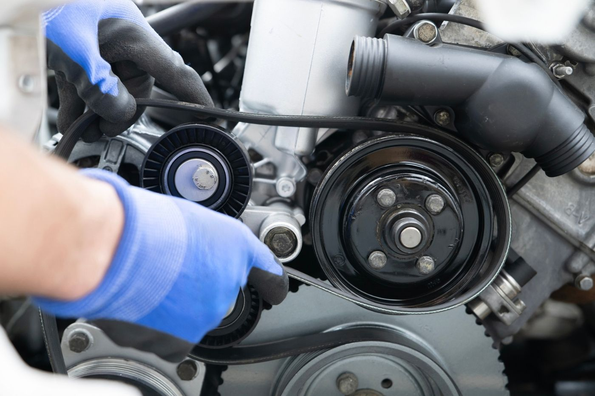
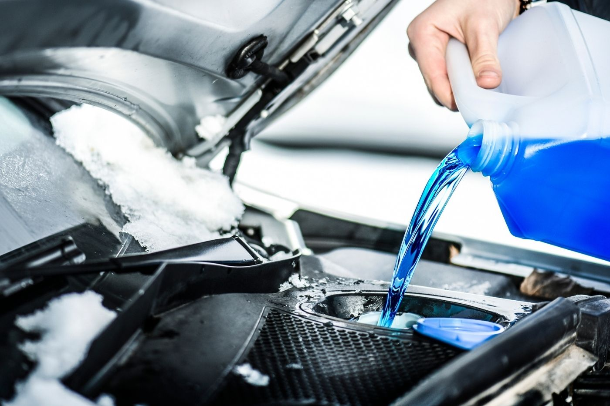
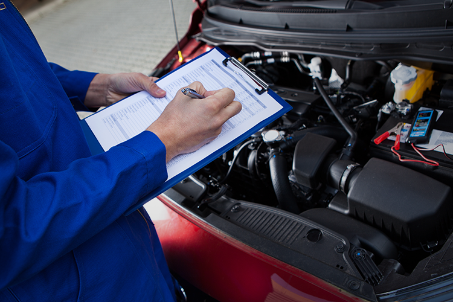

Şarj Dinamosu Tamiri
Elektrik üretimi, akü besleme ve şarj sistemi sorunları için pratik kontrol ve onarım.
Etimesgut / Ankara • Hızlı Servis
0554 507 7368
Aracınız için hızlı, güvenilir ve uzman çözüm. Oto elektrik, mekanik bakım, akü, cam, kilit ve muayene ön hazırlık işlemlerinde Etimesgut’un pratik servis noktası.

8+Temel Servis
HızlıArıza Tespit
100%Müşteri Memnuniyeti
Hizmetlerimiz
Net, anlaşılır ve hızlı servis yaklaşımıyla aracınızın ihtiyaç duyduğu bakım ve onarım işlemlerinde yanınızdayız.

Elektrik üretimi, akü besleme ve şarj sistemi sorunları için pratik kontrol ve onarım.

Kapı kilidi, mekanizma ve açma-kapama problemleri için güvenilir servis çözümü.

Cam arızaları, hareket problemleri ve ilgili aksamlar için hızlı müdahale.

Akü kontrolü, değişim ve araç çalıştırma sorunlarında doğru yönlendirme.

Cam kaldırma-indirme mekanizması ve motor kaynaklı arızalarda çözüm.

Motor sağlığı için kritik triger kayışı değişiminde dikkatli ve profesyonel uygulama.

Soğutma sistemi performansı ve kış-yaz koruması için antifriz kontrolü ve değişimi.

Muayene öncesi temel kontroller ve eksiklerin belirlenmesi için hızlı hazırlık.
Telefonla arayın, aracınızın durumu için kısa sürede net yönlendirme alın.
Gereksiz işlem yerine ihtiyaca göre kontrol, bakım ve onarım odağı.
Piyade Mahallesi konumuyla yol tarifi alıp hızlıca servise gelebilirsiniz.
Vakit Kaybetmeyin
Etimesgut’ta konuma kolayca ulaşın, hızlı değerlendirme alın ve aracınızı güvenle teslim edin.
İletişim
Telefonla hızlıca bilgi alın veya yol tarifiyle doğrudan servis noktasına gelin.